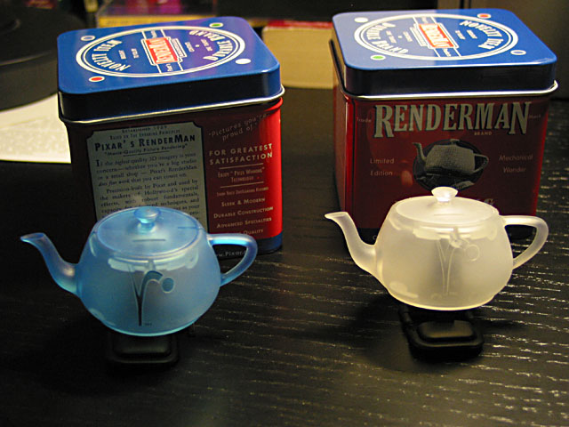

Stupid RenderMan/RAT Tricks 2004
Welcome to the Sixth Annual Stupid RenderMan/RAT Tricks!

What's on this page?
Materials from the 5th installment of Stupid RenderMan/RAT Tricks.
Speakers:
Dan Maas Mars Terrian with RenderMan
Chris Cooper Efficent Camera Motion Blur with
Ray-Marching Atmospheric Shaders
Steve Chapman Maquettes through RenderMan
Mach Kobayashi Prodecural Displacement on Free-Form
Self-Blending Implicit Function Surfaces
Chris Mangnall Point Cloud Tricks
Brent Burley Shader Expressions
Mars Terrian with RenderMan
Dan Maas presented a technique for processing point cloud data sets to dual repesentation which are more efficent and more controlable than dense meshes. Here are his slides. Also he has added notes to the presentaiton, so make sure to take a look at them, too.

Maquettes through RenderMan
Steve Chapman of Gentle Giant Studios presented how they use RenderMan to create maquettes. Here is a PDF document (16M compressed) of the slides he presented.
Efficent Camera Motion Blur with Ray-Marching Atmospheric Shaders
Chris Cooper presented an old idea with a new twist on dealing with camera motion blur with ray-marching Atmospheric shaders. Here is a PDF document of the slides he presented.
Fun with Blobbies
Mach Kobayashi presented problems and cool solutions that he had when working with Blobbies (Implicit Surfaces). Here are his slides.
Shader Expressions
Brent Burley presented "Shader Expressions". This describes a technique to extend shaders by entering mathematical expressions into shader parameters Here are his slides. In the notes section you will find annotations for his slides. So make sure that you check them out, too.
The RMR is Copyright © 1995-2005 Tal L. Lancaster all rights reserved
Last modified: Mon Nov 15 23:35:58 PST 2004